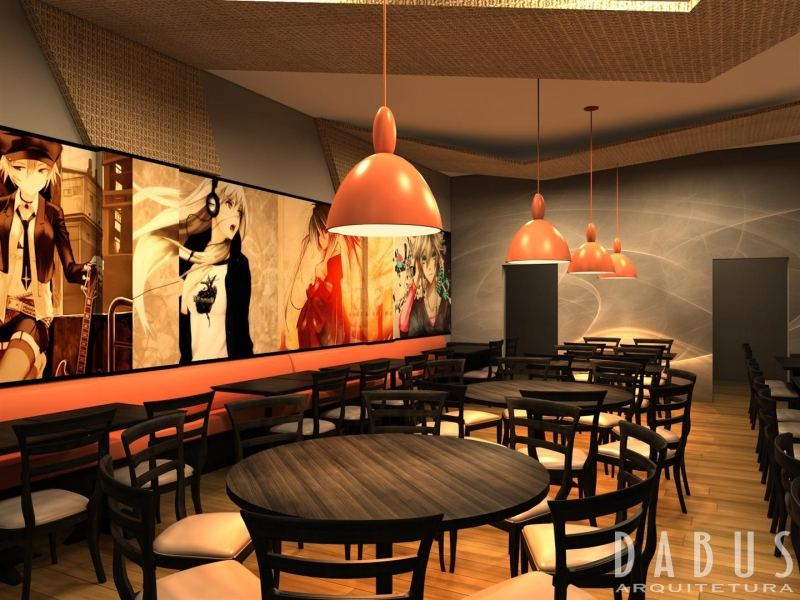
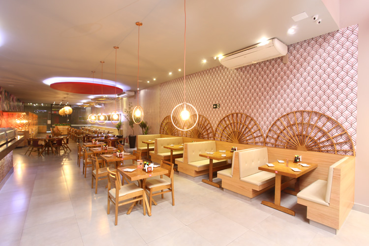
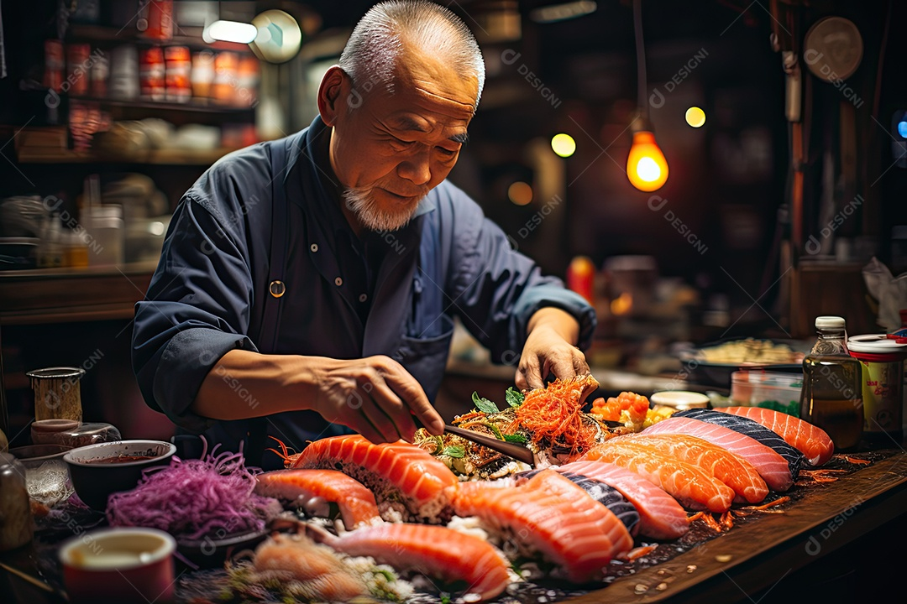

Nosso restaurante foi fundado em 1990 por um chef japonês apaixonado pela culinária de seu país natal. Com o objetivo de trazer a autêntica experiência gastronômica do Japão para o Brasil, ele abriu as portas do nosso restaurante em uma pequena esquina de São Paulo.
Com o passar dos anos, nosso restaurante cresceu em popularidade, recebendo diversos prêmios e reconhecimento pela excelência na culinária japonesa. Hoje, temos filiais em várias cidades do Brasil, sempre mantendo a qualidade e tradição.
Atualmente, continuamos a nos dedicar à arte da culinária japonesa, inovando em nossos pratos e proporcionando uma experiência única a cada cliente que nos visita. Nosso compromisso é com a qualidade e autenticidade, trazendo o melhor do Japão para sua mesa.
